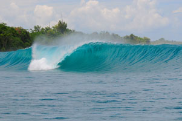
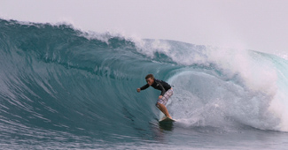

|
|
Hi Danny, Cheers for organising a great trip with Bevo, crew and the Budyadahri..... All time trip. Check out the Wahoo Kyle pulled in (the evil vegetarian) and Green Bush in fine form. Anthony "Ants" Bacon (Australia, September, 2010)
————————
Hi Danny I have been meaning to email you. I wanted to thankyou so much for all your help making this trip happen for us. Ken and I both had an amazing time, waves were great as were all the crew on board. Everyone was so helpful. We got on so well with the other Aussie guys on board we couldn't have dreamed of a better group of guys. We
both enjoyed our stay on the Mikumba 1so much and i am already looking
forward to next year. So you will be hearing from me in a few months
to gear up for next season. thanks
again, ————————
Hi Danny, Been back now for nearly 4 weeks from the trip and still it is a constant part of our conversation. Danny thanks heaps for all your help getting this trip together. We all had a ripper trip, the surf was good the crew were excellent and last of all the boat it was a floating hotel and had everything you could have ask for and made the trip really easy. The Indonesian crew were fantastic and really looked after us, Bevo and Webbie have really good knowledge of the area and was a pleasure to surf with and have a couple of cold Bintangs with at the end of the day.Watching Scuzz surf HT's at 6-8ft clean, was some of the best tube riding I have ever seen in the flesh, to hear him say that he had a head ache from too many barrels was something I will remember. Well I can say Isurfed it and had a crack but didn't get any barrels quite like that but thats something to strive for next trip, Danny could you please pass on the thanks to all of the guys from Sumatran Surfaris. Thanks mate. Take
it easy, ———————— Hi Scuzz,
———————— Hi Chris,
A short note of thanks for looking after me (and the boys) on the trip over the past fortnight. Every minute of the trip was enjoyable and was a total sensation when I consider the quality of surf we got at HT’s, Macca’s and Burgers (Telescopes was small but perfect and I can’t wait to surf that overhead!) I now know what to reasonably expect in terms of surf and so will add a shorter board next time (probably wasn’t too wise bringing a brand new and untested board....however I did get the hang of it after a few days!) Anyway, thanks once again it was very evident that you organise the days activities with the ‘ best surf available’ philosophy and we appreciated that because that’s what we came for! Thanks also to all the crew and apologies to Aki about the photos....we did not aim to make him feel compromised. Thanks mate, and thanks for the local surfing tips...I listened and learned and will be ready for action next year! Hope you have a successful season coming up. Cheers, Ren√©
Johnson, Australia, February, 2010 ———————— Hi
Scuzz, ———————— Hey Scuzz Cant believe I've been back home for over one week already, time is just flying. Now that things have settled down I wanted to take the opportunity to thank you for your hospitality and friendship during our trip. I was totally relaxed on the boat, and this was due to the fact of the crew on board. They were always eager to assist or help out whenever they could, and always had smiles on their faces. It was definitely my best holiday ever. I've been to the Maldives twice on boat trips and the Southern Cross is by far the best deal. I hope you and your charming partner Christina are well, and I look forward to more future trips aboard SC, maybe with my 2 sons. Also, those Heinekens were absolutely sensational, really went down well. Best Regards, Col Steell (Australia, November, 2009) ————————
3 Words: Best Trip Ever Danny, This was my 7th trip to Indo so I feel the subject line requires a bit of justification. There
was a lot of drama this year with my buddies bailing and me stressing
about having enough guys to make the trip a go, but once we got there
it all rinsed away. Even with a solid swell forecast Scuzz and Yu were
unanimous - go South, go South, Tora! Tora! Tora!. I had been leaning
that way myself. After years of running from the crowds it was time
to just go where the waves are. The hackneyed, played-out, cliched,
overcrowded Mentawais. The Mentawais, where the B-waves would be the
A-team anywhere else. When we got to the boat Marsh and I were stoked
to see AK paying us a surprise visit. The Padang crew was totally on
it and Mikumba was underway within a very short time of our flight arriving.
Straight off the crossing we dropped anchor at Telescopes at first light
30 min before sunrise, an hour before anyone else came by. The first
day there was plenty swell but with some funny wind and lump. Icelands
handed out free beatings, no charge. The next morning things were much
smoother and Yu put us on offshore, overhead Telescopes with no other
boats for multiple sessions. It was special - I've very rarely had waves
that good with so few people out. That was day two.
That
night the engine fired up in the dark and at first light we dropped
anchor at beautiful head high HT's. We were the only boat there and
first ones in the water. Guys trickled out from the beach but with three
peaks working the crowd again wasn't a factor. It was The next day we headed south. Bat Caves had nobody out and it was a lot bigger than it looked. Two boards, one hat, and one booty died at sea. We pulled the anchor and headed for Maccas. As we came aroundthe point into the bay the bommie outside KFC's had 10 foot backs,easy. My heart started racing - it would be my first go at Macca's and Bevo kept whooping and saying it was going to be ON. I had been telling the guys that Macca's would be "fun, rippable, and crowded" and I was now about to eat my words. We pull up and there is one guy in the water, no boats, and Maccas is throwing sub-sea level death holes. It was a little onshore and backlit making the pit look especially dark. It's making my guts churn just to type this. I dug out my Gath and Yu, Bevo and I had a go. When we paddled past the one guy he was sitting way off on the shoulder, wide-eyed, and visibly bleeding from his neck. The swell was straight south so there was no wall and no shoulder hopping, either take off in the pit or you miss it. We all caught a warm up or two and Luciano came out. One big bomb came through throwing a lip about 2/3 up the face and froze us all - even Bevo blinked. It's so rare to get such incredible and gnarly waves all to yourself - honestly it was as much Indo as anyone wanted. Hollow, perfect, the edge of anyone's ability, nobody around, the best case scenario you hope you'll be ready for. The carnage continued - another board died. Next morning we shared Macca's with a handful of West Oz chargers. It was offshore, sunny, cleaner, and still bombing. I never waited long for my turn, having seen it the night before I knew where to sit and pumped and stalled through some of the best barrels of my life. Soja and AK were shooting photos from the tinny and had it in so tight that I paddled out around the tinny a couple times. Everyone had a go at Macca's that morning but it was time to push on to something less intense. The sets were also making the anchorage a bit unsafe. Cap kept yelling "Om De!" as the tops of the big walls pushing into the bay slid under Mikumba. The sets were about eye-level with the top deck railing. Yu took a heavy one and snapped his board, but came up smiling. Abunai! With the regularfoots looking for a more user-friendly option Yubypassed a couple heavy lineups and found us a really fun right, head high plus and nobody around. The magic of the Ments - when it's big and gnarly it always seems like there is some mellow option around. There was still some carnage though - Bolts snapped his boss-looking yellow 3" thick Tuflite 2 board. The next day we knew better than to leave good empty rights. A couple boats came, surfed, and left, but Yu kept us there for a magical, super-clean sunset session where the performance wave transformed into racy, perfect tubes with just a couple of us in the water. Thunders was really pretty the next day. Not huge, sets just a bit overhead, offshore, nobody around. I kept telling the guys the swell had dropped, the wind had some S in it and they needed to get out there before all the other boats arrived. But nobody ever showed - we had it to ourselves until we pulled the anchor late in the day. Thunders is a really good wave. After Bevo explained his scar we were all wary of that inside suckout! On the way back north a couple days later we hit HT's again, first thing in the morning. A couple overhead sets rolled in and we thought, yeah it's ON! Once we got out there the waves switched off for a while - it was just shoulder to head high, weak, weird. After so much good surf in previous days Yu showed patience and steady nerves, and around 4 o'clock from dead low tide the wind went offshore and double up bombs just start rolling through. I guess what the tide took away in the midday it gave back for the sunset session. Gnarly, well overhead double-ups rolling in from the outside and unloading, some more makeable than others. I got a few good ones taking off under the double-up, got stuffed on a few, and was having a decent go - almost everyone out there was as skittish as I was. I was wondering why more of our guys weren't coming out when I found out Jason picked a bad one, got a bad beating and got a nasty fin slice on his leg. Hearing about his stitches (capably performed by Yu) and almost copping a big cleanup set on the head I took my winnings off the table. I wanted to get video of perfect front-lit HT's more than I wanted another wave. Once again we had for the taking as much Indo as anyone wanted, and we were just super-stoked for the opportunity. Those were some of the most intense rights I've ever witnessed from the water, just incredible lip oncussion, awe-inspiring. A couple of the tuberides we saw were straight out of September Sessions, and the crowds were at about 1999 levels too! Carnage: Three boards with huge holes, one leg had a mouth, and many egos recalibrated. Next morning HT's was onshore, around the bend for some double-overhead plus Lances. There were two other boats there but only 5-7 guys in the water all morning. I just missed a big one and remember thinking I hadn't looked that far down in a loooooong time. Once again for most of us it was as much Indo as anyone wanted, right there for the taking. We motored on to Scarecrows and there were 2 guys in the water with overhead sets. Nobody ever goes to the Mentawais thinking "I hope we score Scarecrows" but I got a really long barrel on the inside that stands out as much in my mind as any of my waves. It may not have been as gnarly looking but it was super fun, and there were only a few guys out all afternoon. Playgrounds was forgettable. Yu tried to talk us out of it but most of us had never been and he was totally flexible. I knew he was probably right but I just had to see for myself. It was tough conditions up there, hard SW winds, chop, full of boats and camp guys. I didn't realize it's really just the one island Nyang-Nyang that works consistently. The other spots up there need pretty specific conditions and maybe aren't that dependable. In any case we were so sated from all the waves earlier in the trip that we actually started the crossing about 4 hours early on the last day. Bintangs, BS, sitting in the breeze, cracking "Garuda" peanuts and throwing the shells off the rail just never gets old. As for Mikumba, we were loving the huge new shady front deck area. We missed the front sailing mast for about 30 seconds, then proceeded to spend almost all our waking hours under or on top of that shade deck We were also _very_ appreciative that our boards weren't hanging in the gnarly Indo sun like we saw on so many other boats. Guys who hadn't done a boat trip before were amazed that other boats had boards stored in partial or direct sun. Thanks again for being super responsive, knowledgeable, and on the ball - nobody who books these trips has anything on Slayer. May I be lucky enough to organize another one next season. Ian Rhodes, California, August, 2009 ————————
We recently did a trip in late October of 2008 with our good buddy Thomas Campbell and a select group of his friends so that he could wrap of the final parts of his latest movie, The Present. Thomas got a bunch of funky rippers together including Chris Del Moro, Harrison Roach, Kassia Meador, Peter McBride, Lyndsay Noyes, Dane Peterson, Mike Stewart and Danny Hess, and gave them a bunch of different vehicles to ride and test out in our Indonesian playground. Bevo and the crew on Budyadahri delivered them the goods, and Chris (Del Moro) recently did a write up for the June, 09 issue of Surfer Magazine outlining their trip. You can check out the pics and words from the article by enlarging the images below.
————————
Hey Danny, Hey Scuzz.. I'm back in Paris. Just a few words to thank you for finding a solution!!! I got my Mentawaii fix!!! The boat was great, being only 3 was of course a huge bonus... The two other guys were super cool, and Joey is a nice guy/guide! We have been treated by the D'Bora crew like special guests, super good food, and they offered us a complete Mentawaii experience, going from BurgerWorld to The Hole area. We had a big storm, got heaps of fish down south (3 GT and many wahoo), and good surf!!! We surfed 12 different breaks, not bad... The highlight of the trip was a day spent at Lance's left, good size and magnificent shape, with a 5 hours session in the morning (including 3h by ourselves) and a 3h session in the afternoon shared with a Reef team (including Rob Machado)! I also really enjoyed surfing again at Greenbush (not as good as two years ago, but I didn't snap my board this time), and Scarecrows (I stayed more than 9 hours in the water, that was the last day!). I hope next year we'll do a trip together... Professor Thierry Jeantheau (France, May, 2009)
———————— Danny, The trip went great, it is brutal being back at work now. Didnt get any total macker swells but thats probably for the best for a group of Indo rookies. Head high every day with a few bigger days, what more could you want? Bevo did a great job, we were always the first ones to spots in the morning and even scored a fun secret right all alone for 2 days (no other boats). And AK was on it with the mad photo skills. Everyone brought home good stories and plenty of stoke. The Indo crew, legends, seriously the best guys. And none of us could believe how good the food was, 3 meals a day for 14 days all original, flavorful, healthy, filling feed. Right on!
———————— Danny
and Bevo - ———————— Great to be home, straight into back to back north swells, which is always nice. In a lot of ways the whole experience seems like a dream, probably because I've been fantasying about the waves/region since I was a super grom and as we all scored great waves and uncrowded sessions, these surf fantasy's were for good reason. Secondly, our group was radtastical. Everyone added positive energy and fun in and out of the water. I'm working on getting the top 10 music list resized, then I'll scan it and send it back to you all. Big
thanks to our amazing crew who took care of us so well, -Bevo for putting us in the right spot at the right time & T.Moe- for making this trip happen and bringing us all together. Many thanks amigos, Chris Del Moro (California, November, 2008) ———————— Hey Scuzz, Danny and Aki: On
behalf of our crew wanted to thank Aki, the crew and you guys for another THE MANY LIMBS OF AKI: Zen
Surf Guide Extraordinaire Swiss
Watch Timing Tantric
Master DR.
AKI Aki
"Houdini" "Mr.
Natural" He is a legend. Thanks Aki, Crew, Scuzz and Danny for a sick trip. This was the first trip for all our guys but it will most certainly not be their last. Cheers, ———————— Danny, Just got back Sunday morning and in the process of adjusting back to reality. It’s a lot harder than I thought. Where do I start? Aloita Resort was amazing. The resort itself is beautiful and the staff was great. Incredible attention to detail. We had a great time and made some good friends. Once we boarded the Budyadahri and met Brandon, Theo and the PR crew, the real trip started. Yu and Bevo are super cool and we got along great. To me, the waves were ridiculous, but the best part was that Bevo, one of the owners of the Budyadahri was with us and it was his first time in the Telos, and also, Yu got us to surf alone the entire trip. The only time that we surfed with some else was when the Mikumba met us at Rollins in the Telo chain, and when they got there we were already mostly surfed out anyway. To summarize it all, this was for sure the best surf trip I have done and I am proud to say that I now have good friends in Indo. I'm glad I got there early and mostly that I stayed and extra day because I had the chance to meet Christina and spend a whole day with Yu and Bevo drinking Bintangs in the Batang Arau. All you guys run a great organization and it was a true pleasure to be part of it. It showed in every single one of your employees. From Oci who picked me up at the airport, to Anton the chef, Hen, Jo, Bujuan and of course Baron "EL Capitan." I'm not sure when, but I will definitely go back with you guys to Indo. Thanks
for everything, ———————— Hi
Guys, ———————— Hey Danny! Just wanted to report that our trip went off the richter!!! It was truly the trip of a lifetime! The crew on the Budiyudari was insane! Bevo, Yu, Joe, Hen, and Antonio are the shit!! I can't believe how on it those guys are! It's like there's never a moment when those guys aren't working their asses off. I actually started feeling guilty towards the end, because they all felt like such bros, it was hard to let them do all the work while we did nothing. Well, once again, thanks for an epic trip. We scored killer waves pretty much every day. Between Yu and Bevo, we were on the best surf with the least crowds, the majority of the time. I sent some photos to share the stoke! Thanks again and can't wait to do it again! Matt
Mitchell (Santa Cruz, CA, July, 2008) ———————— Danny,
————————
Dear Scuzz and Danny, I know you are out there right now. I wish you every good wave! I just wanted to very briefly say thank you. My trip via Siberut was to be very honest, absolutely amazing. I cannot thank you enough Danny for your help in making my trek possible. Your care in making sure I could make it all happen was very generous and made for me, a trip of my lifetime. So thanks deep and sincere thanks... To you Scuzz, I'm not sure what to say...I know I asked lots of dumb questions but I truly came away changed, and I am grateful for your generosity, your skilled guidance, your patience, and your honesty....I would be grateful if you would pass on my sincere thanks to Abu for his kindness in letting me get behind the helm. The boys are now sending texts and emails addressed to captain Jim!!!! I will be back to the Ments, I know that. Not sure when or how yet but I look forward very much to seeing you again. Bon Voyages! You are a gentleman, a scholar, and so much more....as I have said, you fight the good fight. I wish you every success. You deserve it!
Cheers to matt - hope his bite is ok and to Tom...I was very glad to
meet them both. Cheers
Chris, Ps Big fun at the Pump Room in Singers! Crikey! ———————— Hi Danny Greeny here. We were on Mikumba from 25th April to 9th May 08. North Trip. I just wanted to drop you a line to say how stoked we all were with the trip, and to thank you for your help getting everything sorted. You certainly were not kidding when you said how good it was going to be!! Great waves, great crew, great boat! I'm not sure what AK & the crew thought of 10 surfers from Northern England, probably the wierdest bunch they've had for a while. I think it took AK two or three days just to understand what we were saying (Laughs). We had good waves every single day! AK was totally on it, and used his considerable knowledge to make sure we were always in the right place at the right time. More often than not, we were the only boat at the break and had it all to ourselves! The average session count for the 13 day trip must have been in the 30's , I'm sure the grommets had more than 40 sessions!!!! AK and the rest of the crew were extremely well organised, and nothing was too much trouble, making being on the boat a very relaxed & enjoyable experience. The boat (Mikumba) was superb. Comfortable and with lots of room, you could always find a bit of space for yourself if needed. It was also easily the most 'kick-ass' boat in the ocean. So, a big thankyou to everyone at Sumatran Surfariis for a really great trip. We'll be back! Cheers, ———————— Howdy
Scuzz, Till next year... Tear
my car seat, ———————— Danny, Thanks for putting everything together for our past trip this Apr/May. Trip of a lifetime! The BD had such a great crew, The surf was amazing and we managed to score so many spots alone. What else could someone ask for! They took care of it all from the second we landed in Padang. I have already made fun of my friends that decided not to come and told them to start saving! The 14 day trip is so worth it! The only way it could be better is if we extended it longer. Definitely will be back. Thanks, Brad
Judge and Kyle Langworthy (USA, May, 2008) ————————
scuzz, just
wanted to drop a line to give you a sincere thanks. i've been a pretty
keen surfer for 15 years and i've always wanted to do the mentawais
with you. the trip was beyond what i expected in heaps of different
ways. the waves, lads, crew, surfing standard of everyone, photos, bintangs,
padang. the first night was pretty surreal, listening to morning of
the earth as we headed out. couldn't believe surfing HT's first morning
by ourselves. really enjoyed roxies and bintangs but probably pushed
myself the most at thunders. stoked i also eventually paddled out at
"triple ups" and paddled into 3. me and azza starting to reflect
on the trip now that we starting to get back cheers again mate, you took us places that i feel privelged to see. defientely put a notch in our belts looking back on what we done. everyone back here has been quizing me on the trip and i have had nothing but amazing stories to tell and they've been frothin' listening to it all and then my 1089 photos back it up. feel pretty rich whenever i drift back and think about it. tell christine that i loved the hotel and that i felt the place was a really special part of the trip also. the hotel helped me feel right at home even though i had never experienced a place like padang. good luck for the next few trips and thanks again for helping me live a dream. hopefully be back one day. Dillon
Milenkovic (Australia, May, 2008) ————————
Signing on a mere two weeks before Mikumba was scheduled to depart, Danny Siudara (a.k.a. Slayer) walked me through the process and made me believe that this was going to happen. I have seen the images in surf mags of the Indo barrels for decades after leaving my "life as a surfer" in 1986 to make a move from Del Mar to Northern California. Surfing for me was now a once or twice a year event in So Cal during the holidays. Questioning Danny if this was right for a "48 year old knee-boarder in semi-retirement" he assured me that I could still pull-in with the best of them. Fast forward to the end of 2 days of air travel and we arrive at the airport in Padang at sunset. Adam and his crew were there to meet us and the adventure was on. With our boards and gear loaded up, we were off to the Hotel Batang Arau. Through the darkness we endured a flat tire and finally made it to the Hotel where we were greeted by Scuzz and Christina, the gracious hosts. Christina made sure we were comfortable and ready for the journey that was ahead of us. After a quick bite and finishing up with the details, we left the Hotel for the drive to Mikumba. Once aboard Mikumba, we met the crew and settled our belongings into our cabin as we slipped anchor and motored into the black void of night - destination unknown. As a last minute member of the Cali posse, I was happy to be on this adventure with my brother-in-law Dan and his surfing bro's Chris Dartland, Chris Murphy and Dax Billings. We got acquainted during the flights to Padang after first meeting at LAX, solidified by a 3 plus hour adventure at the wine bar in Singapore at 1:30 in the morning during a layover. Also aboard were two amazing surf dogs- Pete, currently teaching English in Japan and originally from Nova Scotia (surf nut) and an amazing athlete, and Joe, an immediately returning guest who was on the previous Mikumba trip and wanted more (having already endured some 100 plus reef reminders, cuts and gashes). I knew this was going to be good. The Bintangs went down easily that night as we settled in for the adventure of a lifetime. We woke up the next morning to amazing waves, just as AK promised. The names of the many breaks we surfed mattered little to me. The reality that I was in Indo, and not only witnessing "perfect" waves but having the opportunity to surf them, was overwhelming. AK wanted to test our abilities, and when he called me into my second wave of the day, the joy of it all made me feel so fortunate to have the opportunity to be in the Mentawais. Having caught more waves that first session than I did all of the previous year, and they were killer waves, brought back more than just a stoke. Be it a Left or a Right, it didn't matter to me because they were always scary fun. Over the next several days, I would briefly just sit on my trusty old Fish on the shoulder and be in awe of the beauty of place and time. Just being with a group of "surfers', that surf lifestyle exemplified returned me to my younger days. One day in the tinny, I told AK that just being here, watching a perfect barrel- a combination of the right tide, wind and swell direction, this deep water focused energy meeting a reef was all I needed at that moment. I needed an adventure and I was certainly getting more than I had expected. Day after day- amazing waves, tolerable or minimal crowds in paradise, amazing snorkeling, nearly ideal weather, consistent fishing and great friendships. What more could you ask for? Since I didn't surf ever session, it took the formidable crew a while to understand who I was and why I was there if I wasn't "surf crazy" like the rest of the boys. For me, surfing the unbelievable waves was a bonus. I was there to be with my Bro' Dan, and to be on a boat, Mikumba. I am at my best aboard a racing sailboat, but this "pirate ship" was going to be just fine! The craftsmanship was of a time honored tradition, built in the Sulawesian style. The crew could see the serenity that Mikumba gave me: Warm Tropical waters with unbelievable clarity, sunrises and sunsets that just kept on giving, rain or star filled night skies and an appreciation of the little things that make the big picture more valuable. Some of my best memories were the times I had the crew to myself, while all of the rest of the boys were in the water. These men of the Sea were amazing- Eddie kept the lights on, the beer cold and the engine and A/C purring; Sargent kept us in shape by dropping us close to the break from the "tinny", but far enough that we still had a paddle to the line-up or back to the tinny which gave him such pleasure. He cleaned up behind us and made us feel at home; Tulong is such an amazing cook- always with a smile, he fed us three or four beautiful meals a day of the freshest food, spiced up just right. On the last night during the transit back to Padang, he served up the Wahoo I had caught earlier in the day three ways- sashimi, deep-fried and satay style, an absolutely killer send off. Why the hell are we going home again??? Ovi was a key crew member- always one step ahead of us, skills beyond belief and a great person to be around. I will always think of him driving the tinny, backing up in the corner so I could takes some amazing photos of the boys; Captain always carried a smile too- he would get us from point A to point B in style, with Mikumba swaying and rocking to the beat of an iPod jacked into the stereo system. On the final transit, he asked me if I wanted to drive, and I jumped at the opportunity to point Mikumba in the right direction. For us, the right direction included the spectacle of several pods of whales, swimming so calmly that AK, Dan and Joe dove in for a swim with these magnificent creatures. To say that the passage was surreal would be an understatement, for sure. Then there was AK, Adam Kobayashi- his experience far beyond his years on this planet. He asked for our trust and he rewarded us daily with waves that memories are created from. He was always "straight-up" with us, even though' sometimes this was confusing. I spent many hours with AK and the crew in the wheelhouse, after deck, salon or in the tinny. I can't imagine the trip without AK as our guide, and I hope he will be the guide when we return. I'm sure of it- he gave us an amazing trip of a lifetime, until we do it again. AK, you better start planning now... Returning to the real world was a non-cultural shock that I never expected. The transition from peace and serenity to reality is just not fair, in fact it fucking sucks. I want to thank everyone who had a part in this EPIC voyage, a trip of discovery, peace, serenity and life. The scenery, people and the children of Indonesia will always have a place in my heart, alongside the crew of Mikumba. Scuzz and Christina have fostered an incredible organization, and with Danny on this side of the equator making it smooth as glass, I can't wait to go again. Maybe next time the Cockroaches will stay ashore! Jeffrey Gould (Northern California, March, 2008) ———————— Hey Danny, Just wanted to let you know what a great trip we had & what a great crew you guys have.Waves were awesome - scored some solid ones at HT's and also sheet glass at Maccas (as well as a few other spots). Yu is a fantastic guide (and obviousley loves his job-can't blame him!) and also a great diver- we lost an anchor at HT's one arvo & came back the next morning and while we were surfing Yu's retreived it. Absolute legend! Anyway everyone was absolutely stoked with the trip- can't wait for the next one! Cheers, ———————— Scuzz, I can't thank you enough for the incredible two weeks we had. I feel priviledged to have been able to enjoy such a beautiful place without the masses you typically associate with perhaps the most popular surf destination in the world. It was exactly the experience I think we were all looking for. What makes it even better is that no matter where we went or who we talked to- whether it was fellow skippers, Mentawai people, Tom Carroll for God's sake- there is a universal respect and appreciation for you. Not to get all mushy on ya but in my book, you have to give respect to get respect and it is obvious that you have earned every bit of it by doing things the right way. Realizing that you have a business to run and people who depend on you for their livelihood, I am sure it has not been easy for you- where others may have cut corners or taken advantage to earn a few extra bucks you have probably had some tough decisions to make. Some people told me we were foolish to do a trip in late November but in the back of my mind I kept thinking- who am I going to listen to, them or Scuzz? There is no such thing as a 100% guarantee in life anyway- not knowing what you are going to get is half the fun. Sorry if I am rambling on here, I just wanted to thank you for sharing a really magical place with us. Here's to future success for you and Chris and everyone associated with your operation. Until the next trip. Grant Sharp (California, December, 2007) ***for
a nice photo journal of this late November trip, check out this site
here: http://homepage.mac.com/patkelley1/Indo2007/index.html
————————
i just wanted to drop a line thanking you guys for the great stuff you guys do out there , i had my first ( but not last!) trip with you guys a while back with AK and mano , being the grom , ( 15) usually makes life a bit difficult in the suring world i live in, but you guys made the best outta the trip and we all had a blast . superb waves im looking forward to my next trip coming up soon with the mikumba , mid year . gordon brown (Western Australia, November, 2007) ————————
Despite the fact that I wasn't sure if I would even make my first part of the trip due to some chaotic flight situations on the first leg of 50 hours worth of flying, I think I can our trip was probably one of the best trips I have ever been on. Our group was awesome and everyone had a great time together. Ask AK or Dr. Evil about the "Band" and a whole slew of stories will surely follow. We consumed more beer than I knew possible but were still on it early and all day. Some great tubes at **** even though that place took more flesh in a single day from me than any of my previous two trips to Indo and other locales such as Samoa combined. We caught some ***** waves way up north pretty darn good and had it solo for two days only to laugh at seven boats that pulled up as we were pulling anchor and headin back south. Damn good barrels and walls up there. Hell session at Asu broke my board after the second wave but a quick replacement put me back out there and we had it damn good all day. Overall one hell of a trip with the best crew and captain I have ever had. Even though I started full time work a few days after getting back to the states and probably won't be able to take a trip like that again for years to come, I think the amazing memories might be able to last a little while. I just wanted to thank you guys for making it so enjoyable. I attached a photo as requested by AK for future use by you guys. Hope to be able to do this all over again at some point in the future even if I am a bit greyer. Take
care, ———————— Hi Danny, As
a first time participant in an organised surf trip this was a new experience
for me and I think that the whole Mikumba crew and Padang support team
deserve a huge pat on the back. I could not have asked for a more conscientious
and easy-going guide than "AK" and when he said on the first
night that we'd only have to do 2 things (unpack on day 1 and then pack
on day 14) he was right. We surfed a mix of lefts and rights and I'm
really grateful that AK, Mono and the crew were able to get us to a
location each dawn that had swell and offshore winds. Thanks again Danny, I'm already thinking about next year! Dave Presley, (August 2007, Victoria, Australia) ———————— Apple
I, ———————— Hey Danny! How's it going? I wanted to tell you about my trip aboard the BD (Budyadahri) and you can post it on the site! The best trip I have ever had!!! I just got back a couple days ago from a 2 week trip aboard the BD and this boat has the best layout out there with tons of space to hang out and relax! I would not want to be in any other boat!!! The sleeping beds are comfortable, the TV/DVD area is great, the bathrooms are strategically placed on the side of the boat and the toilets and showers work well. The upper deck is golden and it was where we mostly hang out during the day and night with the stereo always cranking some great tunes! The food was great and the ice cream too!!! :-) Let me say that you have the best friken crew out there!!! The guys go way beyond their duties and are always there to whatever you need! From the cook to the captain and not to mention the engineer who can fix boards better anybody I have ever seen! Yu and Bevo often in the speed boat taking some great shots of the guests!!!! :-D All of them amazing people which I became good friends with. I had a fantastic time out there and did not want to come home! We scored amazing waves with hardly anybody around! Telescopes, Lance's, HT's, Macca's, Thunders, Rags and even Green Bush! WOW !!!!! Incredible place, awesome boat, unbelievable waves, great people and the best time of my life!!! Terima
Kasih, ———————— Danny, That trip ruled. No place on earth quite like that. It was my first trip and definitely not the last. I'd have to say too, the crew was constantly on it at every decision. All was always handled, and things were smooth as could be, despite mother nature. Seas a little rough? No worries. Cappies on it. Need to switch a board? Jai's on it passing it down to Soldier in the zodiac, and simultaneously tuning the motor. Need lunch? Tulong is in there making the spiciest thing you've ever eaten, and laughing his head off the rest of the day when you eat it. Cut your hand off? There's Mano to sew it back on. Then there's AK callin it day in and day out. Once he showed me the skatepark, they could've left me there and picked me up on the way back. But push on and be rewarded. And that we did. Cappy manhandled 10 ft seas for hours on end. Ovi and Jul rocked tunes while the sun went down, lighting up the sky. The barrell opened up and Tomo was there to get the shot. Catching fish. Eating sushi! Rooftop chill sessions with Mano owning the drum and talking of Brasil. Things were surreal there. Like a lifetime packed into 2 weeks. The water's cold here. Back to autopilot. Work. Save. Go to Indo. I look forward to my return and thank you for escape of a lifetime. Danny
Sullivan, June 8-22 (Central California, July, 2007) ———————— Hey Danny (Slayer), I wanted to report back that our Sumatra trip with F'IN sick! We all had the best time and the surf was most excellent, so thanks so much for your assistance. The whole experience was so professional from soup to nuts, and I can't wait to return in 2008. I loved the Mikumba and already miss waking to a dropping anchor. The crew was ideal, notably: AK - So chill and so professional, bummed he couldn't surf with us. Totally kept us in the loop and made great decisions. Top shelf guy! Mono - Classic dude, really came in handy with all our injuries, especially some cheek/nose stitching. Having a surgeon on board really helped ease my fears, too. And he ripped, too. Tomo - Jedi Master, sick photog. Tomo rules. Tulong - Insane meals every time. Best omelets ever, and great presence. Keiko - Best bonus of the trip. Wonderful attitude, killer massages, great addition to the whole experience. Budding Ukulele professional. Please pass along my thoughts to Scuzz, and thanks again for all YOUR great work too. Best 2 weeks ever. Carter Townsend (California, July, 2007) ————————
How do I begin a thank you email! Fucking awesome comes to mind straight away! (Scuzz) A big thanks to you to begin with, as you started the whole Sumatran Surfariis. Your insight to begin with, has lead many an expedition to find beautiful, majestic and sensational waves. To then use that information and begin a pure surf trip company designed for surfers to experience awesome waves with life on a boat added on, is a massive credit to you. Along with the use of many a local it has cemented in my mind, a perfect Indo surf holiday. To your lady, the Lovely Christina, a bright bubbly crazy character that emits a welcoming radiance when greeted at Hotel Batang Arau. With a story always to tell, the company strengthens. Hotel Batang Arau, What a Hotel! I stay in many a hotel for work, and for me this is the best... Fuck the glamourous 5-star shit.... the staff there are amazing, always smiling and very eager to help! The rooms perfect, the food exceptional, and all extremely friendly! Perfect way to start a surfing adventure. The Budyadhari Crew.... Now words can't describe. Knowledgeable to every degree, from boating to life in general! ·
The Captain quiet, but always smiling and can get a ship out of any
situation, with 30yrs in the Mentawais who else can one trust! Sheldon and Bevo..... 2 guys I will always call my mates! The combined insight of them, and the investment made to help put Budyadhari afloat a perfect combination to have on our charter. Sheldons' love for the waves, and determination to push people to try variable things was great. His personality gelled with all, tho needs to work on his comedy routines! Bevo, ya mate of mates.... Top bloke, without Yu being on board he will guide anyone around the Mentawais just as good... Just don't break anything Bevo! What else can i say! But you ain't seen the last of myself, nor Steve and Simon. We will tell all that wants a surf trip to forget the rest, Sumatran Surfariis is the best! (sorry shit cliche but poignant) I am putting together many a DVD worth of photos for all on the charter, will also send you a copy with also a portfolio of photos of the boat and unrelated surf spot locations for you to use at your discretion. When can we book our next trip!? Full Respect, Josh
Symon, (Australia, June, 2007) ———————— Danny, I have returned home yesterday from an adventure of a lifetime. High expectations are generally not meet but in this case the trip exceeded what I thought a boat trip would entail. Scuzz was absolutely an amazing guide who was professional in every way with a warm personality and infectious spirit. His knowledge of the area and ocean had us all surfing the best breaks the day had to offer. All the crew were incredibly hard working and at times I felt like some sort of Royalty. Great memories are now etched with amazing photo’s to relive the awesome experience. Cheers, Matt Davis (Victoria, Australia, June, 2007) ———————— Hi
you guys - ———————— Hello Scuzz and Christina, As far as I’m concerned you have set a new standard in surf trips that is going to be almost impossible to beat. All I can do is keep coming back. Thanks to Scuzz, with your amazing knowledge of the area, for getting us into such a variety of quality, uncrowded breaks. You are a legend. Thanks Aki for your photography. It was definitely a bonus, checking out the days pics every evening with mates and plenty o’ Bintang. Thank you, Captain, Boody, Eddie, Joe and Erie for looking after us so well. I was just hoping for great waves and you guys made it so much more. Regards,
———————— Hey
Scuzz and Christina, ———————— Sumatran Surfariis Family, I wanted to thank everyone at SS for making every trip magical! It has been 4 trips on 4 boats and every trip has been unreal. I look forward to coming back as often as possible. Scuzz, Slayer, Christina, Aki, AK, Yu, Shello and the entire crew have allways been super professional, and friendly. It shows how much they care that their guests have the best surf trip of their lives. Finding the best most uncrowded waves is their goal, and what else could anyone ask for when they go on a trip? See you all soon.... Rick "The Bear" Whittington (Sebastopol, CA, April, 2007) ———————— Dear Sheldo and the Budyadahri Crew: Our trip was between 17 August - 1 September 2006 on board the Budyadahri, under the expert guidance of Shello, and the crew: Captain Baron, Chef Tulang, Engineer Bujang and Deck Hands Hen and Zul. The guests were quite an eclectic mix of older surfers, including desk bound London lawyers and Auckland professionals as well as a 50 year old South African charger. The rest harked from New Zealand, North Carolina and Japan. It was quite a challenge catering for mixed abilities and fitness, but the Budyadahri seemed to be able to optimize the best waves in the conditions. The introductory sessions at Playgrounds and Bang Bang were the perfect warm up for what lay ahead at Thunders. We surfed everyday, whether it be the playful Bang Bang or the heaving Thunders. Most of the time we were well ahead of the pack - testimony to Sheldo's experience and the ocean knowledge of Captain Baron, who would drop anchor each morning at another uncrowded gem. Our voyage took us to most of the big spots E-bay, Lance’s Left, Macaronis, Japan Island, Thunders, Rag's Left and on the final day a heaving HTs. The accommodation on board was superb - always another cold Bintang on hand, delicious food available and excellent surf viewing from the top deck. We ate like kings with crabs, tuna and trevally in abundance. The highlight of the food gathering was the capture of the king of the sea - a 45k trevally. There were some hell barrels with Bazza in particular scoring a gem at Thunders - but there were many more…. There is nothing quite like bonding with a group of new and old friends with one thing on their mind (no-not the professor's cornucopia, massive fish or even the beautiful scenery)- paddling in to more big clean waves! This was a once in a lifetime experience. Thanks to all of you for making it a reality for us. Keep paddling… Adam Culy (United Kingdom, November, 2006, photos sent by Adam to accompany his story) ———————— Scuzz and Crew – It’s been a month or two since we got back and I think I can safely say that there has not been a day that’s gone by that I did not think about the Southern Cross, Indo, and the great waves we scored. It’s real hard to enjoy 2 foot beachbreak when the bar has been raised so high. From booking the trip to getting dropped off at the airport to fly home, everything was great and well organized. The crew, food, boat, surf, etc…….good times were had by all. Thanks again and hopefully you will be getting an email soon from our crew locking down another trip! Terima kasih! Drew Weddle (California, November 2006) ———————— Hey Shello, Well unfortunately I'm set back in surfless London ( not for too long hopefully...), and wanted to take the chance to say thanks for a fantastic trip through the Mentawai's this season. After travelling the world surfing the past few years I would have to say it'll be pretty hard to top the mission we had on board the Budyadari. The boat was primo, heaps of space to chill out and sink the odd tinny on the sundeck after a big day in the water. I think that blew me away the most was the quality of waves, after 2 weeks of cranking swell and constantly being ahead of the pack surfing uncrowded barrells, it was a testament to your experience in the area. I have some other crew that are keen to head down next August and it would be great if yourself and Budyadari were free for another sojourn. Say gidday to Han, Eddie, and the rest of the crew, and don't forget to let me know your movements next August. Ka ki te, Mike Doig (London, September 2006) ———————— Hey Scuzz and Danny! Now it's already 1 month ago when I left from Padang back here to Brussels. I want to thank you for making this trip possible for me, specially with such a short notice. When we all finally came aboard Mikumba it was like being right there, just as I always had imagined it, and next morning when dropping anchor at this beautiful right hander I felt really really happy. So happy just to be at such a place. This trip will still give me these good memories for the coming weeks, month......, years. What I just want to say is, IT WAS A F*CKING AMAZING TRIP. The crew and also the other surfers were really nice and mellow. Just perfect! Shit, I want an other one, RIGHT NOW! Guess I need to wait some more time to make it happen again. Until then I say goodbye and send you my very best regards. Cheers ———————— Scuzz Sorry, been a while but got around to it eventually. I just wanted to say a huge thanks again to you, Chirstina and the rest of the crew at Sumatran Surfaris for such an amazing trip, best surfing trip I have ever been on by far. Well, its been a while since me and the rest of our Welsh/Aussie crew returned from our 2006 trip but I still dream about it pretty much every day. I was amazed at the distances and the variety of the breaks in the Mentawais, but we still managed to surf for an average of 6 hours a day for 15 days with multiple sessions at at least 12 different spots. From rights that seemed like Kirra, to epic epic places like Maccaronis, we did it all. We also managed to do it while avoiding most other boats and hooking in some chunky fish along the way. This is all thanks to our expert guide, Yu, who was just awesome. He not only knew the Mentawais area better than most people know their local surfing area, he was consistently playing the game smart, checking other charters itinerary, listening on the radio, to avoid others and pick the best waves. He was also totally stoked on sharing the waves with us and seeing us get some dream green rooms wherever he could direct the Budyadahri. He also taught us a bit about how to ride some thick mutants at Bank Vaults. It is a credit to you guys to train the guides to that level, and after the trip, it has become obvious to me that a really good guide is more far more valuable than a slightly faster boat in order to score good uncrowded surf. The rest of the crew were superb too, all friendly and happy, and worked really hard to make sure that we got around the islands safely on full stomachs and with a cold Bintang in one hand wherever possible. One of the fellas was an expert ding repairer, which was pretty lucky as there were some serious holes of fibre glass to replace on some of the boys boards even by the end of the first day. They made it a real holiday, and sorted out pretty much everything from racking the boards up to hanging up wet clothes hanging around etc.. They also knew about how to pull in the big fish. They were pretty excited about some lures we bought onboard, which were so nasty looking that I am surprised we got them through customs. Unfortunately, they lured big fish that our lines just couldn’t cope with; we lost them both to a 2 metre sailfish that snapped the lines like dental floss; what a sight though seeing a fish like that go absolutely mental jumping around until it got loose!! So, sincere thanks again and definitely will be seeing you again for a future trip. Until then, I will be carry on dreaming. I have attached a photo of the waves that I dream about the most at Maccas. Cant wait to get back there! Cheers Ed Phillips (Wales, August, 2006, regarding his April 2006 trip) ———————— Danny
& Scuzz: ———————— Danny, ———————— Danny, Jim Lee (Southern California, August, 2006) ———————— A
sincere thankyou ... shared by my kid and I toward you all. ———————— Aloita is the perfect place to take your partner away on holidays, but you still get to surf! Now you can go surfing and they can get pampered in the day spa and it won't break the budget. The resort is set in picture perfect white sand beaches under coconut palms and surrounded by aqua blue water. Its an affordable surf / dive holiday with the privacy and the creature comforts but without all the hassles. The bungalows all have there own private beach access to calm, safe swimming and snorkeling beach while A-grade surf breaks are only minutes away on the speed boat with the expert guides. The resort is a long awaited alternate option to surf and dive the Mentawaii islands in style. Scott Godfredson (Australia, June, 2006) ———————— Danny, honestly... it was the best surf trip I think any of us have ever been on! For two weeks, we scored incredible surf... lived aboard a kick ass boat... had perfect conditions... surfed our brains out... and had an AWESOME guide with a FANTASTIC crew!!! I couldn't have asked for anything more... everyone was stoked, like truly STOKED on the whole trip (which made it extremely hard to come home). THANK YOU, THANK YOU, THANK YOU for all the planning and hard work... and for answering all the questions which came your way. I'm completely convinced that Sumatran Surfariis is the best surf travel organization out there. You guys have it dialed in... from the booking process, to the killer hotel in Padang (with great food and a cute staff :) to the insane trip you sent us on. Being back at work SUCKS... your operations have totally jaded me for life! ;) Adam took extremely good care of everyone, putting us in the right spot at the right time. the WHOLE TRIP! We even had a chance to venture pretty far north which was an extra special treat for many of us... you hear the stories, but you never know till you're right there in the pocket! I have to say, both Adam and Yu are SOLID guides who fit in with our group very well... provided endless entertainment and showed us a thing or two about surfing world class barrels over sharp ass reef breaks. Our food was insane and the sashimi/poki that Saka whipped up was definitely a hit... Sharing this trip with my best friends, my new friends from the boat, and especially with my brother, was all-time! Memories were made that will stay with me the rest of my life... and I'm pretty sure the rest of us from SWATT '06 feel this same way. I only wish I could still be back on Mikumba! Shaka,
———————— Hey Danny, Hope your doing well. We were pretty lucky with the swell again...anywhere between head to double overhead the whole time! Me and AK got a special session at our favorite secret spot!!! Trading off barrels on every wave, by ourselves, with only a rainbow as company...priceless. Got to check out the waves further North this time and was blown away...the place is absolutely amazing. AK is such a committed, full force individual and is always in the right place at the right time. The other guests were blown away by how "on it" he is...I already knew it! I got to meet Yu for the first time and really liked him a lot. He's such a humble, sincere, and thoughtful person...not to mention the fact that he's cool as hell and an amazing waterman. Needless to say, Sumatran Surfaris is what surfing is all about and I'm honored to be associated with you guys. In the immortal words of Monkey, "I've scarred my brain for life by getting shacked up from the mozzies all the way to the breadfruit tree!" "Not a drop of water out of place...Aishh." Take Care, Rob Bent (Ventura County, CA, June 2006) ———————— hello christina, scuzz, and danny, i wanted to say thanks to you and the entire crew for an awesome trip! you had to deal with a lot of superfluous issues (bullsh..) with our trip and handled them magnificantly. your patience, diligence, and positive attitudes deserve special praise. before even stepping on the boat, I would have recommended Sumatran Surfariis to anyone in a heartbeat! and... now that i am back at home suffering from post-indo depression, surfing in 11 degree celsius water, and thinking about the trip... i have nothing but applause for your company. everything was seamless... we arrived in medan and tom took care of us... ak was there to get us on the boat in sibolga... the crew was second to none and ak was awesome... two weeks of surfing, eating, and chillin on the mikumba were special... debbie greeted us in sibolga and brought us to the airport... we were met in medan, stayed at a very nice hotel, and taken to the airport the next morning for our flight home... all we had to do was show up and everything else was like clockwork, which would not have been the case if we had attempted traveling on our own. unfortunately, during all of this, the indian ocean didn't cooperate with everyone's expectations. that being said, ****** was epic, ****** was perfect, ****** was wild, ****** was phat, and the islands off northern sumatra have so much love to offer! i have been on many fishing charter boats and know how much effort goes not only into keeping them afloat but also in catering to their clientele. the mikumba's second surf voyage with Sumatran Surfariis can attest to this... we had epic surf, no surf, empty lineups, barrels galore, amazing sunrises and sunsets, tropical fruit, fresh fish daily, lobster, storms, fried food, dinged/broken surfboards... and we made it home safely! the crew is first-class in every aspect, it's no wonder i enjoyed hanging out with them so much. ak was a great guide who found us waves when it seemed there was no swell out there. basically, I was stoked to be a part of their family for two weeks... yeah bongs! i have no doubt that the mikumba, and Sumatran Surfariis, will only get better with each trip under your guidance and dedication... and it is already exceptional. i look forward to meeting the padang folks and would appreciate it if you could tell the mikumba boys "happa kabar bongs" for me. until next time... much respect Dwight Barnes (San Francisco, CA June, 2006) ———————— Scuzz, I just got back from a 13 day trip on the Mikumba with AK and company (Rhodes group). Although I know that Ian is compiling a comprehensive list of thoughts on the trip I wanted to send my own. The trip was excellent. AK is a great guide, very positive and very committed to making the experience a good a possible for everyone involved. Great knowledge of the spots and his willingness to travel, especially during flat spells really made us feel like if there were waves to be found that AK would find them. The Indo crew was great as well. Our appreciation was reflected in our tip. They were hard working but mostly just plain good guys. The waves could have been much more consistent but that goes with the territory. Take care, Mark Hildebrand (San Francisco Bay Area, May 2006) ———————— I‘ve been on a lot of surf trips in my life and the preparation phase is always stressful. Are we going to score good waves? Am I in good enough shape? Did I bring the right surfboards? Will I have any travel problems? The first dip in a foreign ocean washes all the stresses of life and travels away. Last August I traveled to Indonesia with a few good friends to embark on a 16 day journey to some remote islands off of the coast of Sumatra. A total of 18 hours was spent in the air but we finally made it. Stepping off the plane a few degrees below the equator is like walking into a wall of water. The humidity immediately soaks your clothes. The Indonesian people are very friendly and we were met by kids yelling “hey mistah” with big smiles on their faces. We spent the afternoon at a small hotel along a river drinking 50 cent beers and eating $2 pizzas. At dusk we walked down the boardwalk to our boat, the Southern Cross, and scrambled aboard to pick the best bunks. This dorm style set-up was to be our home for the next couple weeks... (this is just the beginning of a longer letter Anthony "Alaska" Schwamm wrote for his fire department newsletter. It's a great read. For the full letter, click here) ———————— Danny, Great trip. I don't know if I can put down the right words but knowing this was MIKUMBA'S first trip out of Sibolga, I have to say it went very well. Every step of the way through out the travel we were met immediately by someone who ushered us quickly and efficiently through the red tape of foreign travel. Once we got to where the boat was moored we met AK. The boat wasn't quite ready for us to board so we were made comfortable at the hotel in Sibolga for a short time till we boarded. The boat was clean. big and spacious. The crew was absolutely on it! They kept the boat clean and organized all the time and the food was excellent. We traveled north and worked our way up. Not much swell but still sampled some fun waves every day for the first few days. This was alright ‘cause we were all still adjusting to our new surroundings and environment. A few days in we had some minor crew drama, which was quickly and smoothly worked out. With this behind us things started to open up and flow nicely we shared Asu with two other boats for a couple of days while a decent swell pulse went through. We easily shared sessions with the other boat crews and had a couple of magical hours of surf each day. My 40th birthday and the dice game blah blah blah. Ouch! Kept going north and surfing every day. Eventually bumped into a couple other boats but were able to stay out of each other’s way. I think out of the two or three other boats we ran into we scored the best and most consistent surf. Of course not knowing the area we always wondered what it was doing somewhere else but the boys kept us on it. We looked at other spots when we couldn't stand the pressure anymore and always felt like we hadn't missed the call for that day. We scored little swell pulses regularly and had a great time. STOKED! Thanks J.J. Gerritsen (California, May 2006)
(certain spot names withheld on this one to protect our northern secrets) Scuzz and Christina, I'm back in France! Once more, I had a great trip, thank you!!! First, I must say that I was amazed the way you organized the trips between Medan and Sibolga! I did it by myself a couple of times, and it was hard to believe that it can be so smooth! At every stop, we had someone to help us, and for the return trip, even though you have to cope with the cancellation of Merpati flight, everything went fine and we got in time in Medan! Mikumba is now perfect for boat trip! Having separate cabins is a huge bonus... The boat is so huge that is easy to find a spot for yourself if you want to. Of course, the first days have been quite hard for Adam and the crew, to make everything perfect... But after this, everything went fine, good organization on the boat. For a first trip, the crew did really well. And the cook Saka is a real "Chef"! The boat is ready for a great season. Concerning the surf, despite the lack of swell, we did really good!!! 10 days out of 13, at least one guy on the boat got a barrel! We scored ****, a perfect Asu during 2 days, and all the spots on **********! I'm not sure the Californian surfers (very cool guys) really realized how good Adam did with this swell condition. For me, the last day was kind of special! The Californian guys did not want to surf ******** (most of them were goofy, it was pretty inconsistent, they preferred to surf ******), Adam dropped me on Southern Cross to spend the day. I got such a warm welcome from Aki and the Indo Crew (Capt. Maytek, Jo, Bhuddy, Harry). I was really touched! And I surfed ******, got 6-7 bombs peeling perfectly for 400 meters, first time for me since the earthquake. I'm so stoked this wave is still that gem!!! Leaving from Sibolga was a real plus, since we could surf the ****** on the last day. The only drawback was that I didn't spend anytime in Padang, to give a big hug to the surfer of the year and a big kiss (with your permission, Scuzz) to you, Christina. Thank you so much... See you soon, the sooner the better!!!! Thierry
Jeantheau (May 2006, France) ————————
Well I'm back in sunny Queensland and yep there's surf but it's not a scratch on the experience I had with you guys. I just wanna say a huge thanks to Christina, Chris, Danny and Yu!! I certainly got some of the best waves of my life and soooo many of them!!! Yu has some photos of the trip and Chris Farrand is making a video so that'll be cool, and as soon as the pics start to filter through to me I'll forward them to you guys... The crew on the Budyadahri were so helpful and deserve a big rap, always there to help and make sure you're comfortable and well fed for the whole trip, totally unbelievable!! Yu, such a cool cat, and I'm sure he'll be staying with me over in Oz at some point, a great guide who gave us the best waves, whilst 5 boats were at one celebrity left we had one of the best rights in Indo to ourselves!!!!! 6 feet of arrrggghhhhh!!! Last of all I think the good vibe that your guides and company promotes puts at ease your customers and invites an attitude that enabled everyone on the trip to get along...and I can honestly say that there was no tension on the boat, we all made great friends and no doubt will stay in touch and hang out again. Fingers crossed I’ll be out again, and it'll definitely be with you guys. Best of luck for the rest of the season goodtimes and happiness, Gavin
Edwards (Queensland, Australia, April 2006) ———————— Dear Christina & Scuzz, Speaking on behalf of our group, you and your crew are beyond words!!!! Slayer was so accommodating, simplifying everything from our boat schedule (Thanks a million for the Budadahri, what a treat!!) to our flights, health insurance, what to bring lists, etc. He set it up where global travel felt easier than domestic!! Truly making the hard parts of the trip cruise!! Yu was over the top!!! He should get an award for ALWAYS being on it no matter what the condition!!!! We surfed nine spots in eleven days ranging from fun to ridiculously perfect!!!! He had the boat rolling before sunrise always ensuring we had good surf everyday!!! Yu is a true waterman. He went out a mile, dove 30+ feet, speared a fish, just to ensure we had fish that night. He put together a DVD of our trip that was of complete professional quality. By far the best video/DVD of our entire group’s personal library!!! The crew took excellent care of us treating us like kings. They kept the boat clean and immaculate. Edi’s food was delicious (fish, chicken, vegetables, all fresh and very tasty). Zul and Hen never let us paddle. They watched us like hawks. The slightest movement toward the surf and they had your board and the dingy ready to take you (amazing how they knew each of our boards). With a wave of your board they were there to pick you up from the line up with a cold one!! Out of this world!!!! Bujong never stopped working illustrating he could build and fix anything (including Josh’ leg). A true hero!! And Boron gave us the utmost confidence in driving the boat safely while catering to our every surf whim (leaving on a moments notice). Your entire organization is the best of the best!! And imagine this you exist in the most perfect wave enriched environment in the world!!! We have all unanimously concluded that Sumatran Surfariis has the best to offer in surf travel. The best waves, the best crew, the best attitude, the best understanding of both the Mentawai people and waves, and the best organization of travel!! Between us all we have been around the world several times and nothing has compared to the experience you provide!!!! Looking forward to next year’s trip (by the way this year was even better than last!!!!!!! Sincerely, David Hergenroeder, Mike Keller, Neza Chavira, Josh Offill, Tony Foster, Brandon Kato, Brian Hanft, Jerry James (April 2006, Central Coast, California) ———————— Ciao a Danny & todos! Trip was great even if last days we had small waves and lot of rain, but we found and surfed a new spot with the wind swell. We named it Desperados or Risky Left (Chad knows) and we had the chance to explore the islands. Food was great and the boat too (lots of dvd for the stormy hours), maybe the tall guys had some problems with the small space in the sleeping area. The guide is a really cool guy and the experience on land was really impressive to me and to the rest of the group. If you want to check our website has some pictures on line www.riskypoint.com. Hope to come back again next year guys. Take care boys, I miss the Broke Back Boat !!! Giuseppe Arioni (April 2006, Italy) ———————— Hi Danny, I just wanted to thank you again for all of your help in getting the Indo trip set up. I had a stellar time and am already looking at dates to go again. I am thinking October, March next year and Sept./Oct. next year. You may think I am kidding, but I am definitely not. Saranya was a great boat and as you said, the guys were a kick. Both the Italian contingent and the Danish guys were a real kick. All
the best, ———————— Hello Danny, I'm really happy to say that all us who went agree that it was the best surf trip we've ever done! Aki did a great job finding the best waves, taking great photos, and generally getting along well and having a great time with all of us. We had good quality waves nearly every day - head high Burgurs - overhead Macca's - several good days at Lances Left and HT's ranging from 1 metre to well overhead. We can't beleive our luck and we're all keen to do it again. We'e bound to be speaking again in the not too distant future. Cheers, ———————— Hi Scuzz & Christina, Well,
its now just on a month since I have arrived back in Oz along with the
other guys (Pete Smith, Choc Oke etc). Firstly, without carrying on
too much, my trip away with the guys and especially you Scuzz and the
crew was just so amazing that I can't even start to explain to people
how good it was. I'd be back right now if I could sell my property at
Cape Schanck. Thanks
again, ———————— Hi Danny! WOW, AWESOME, that is how the boys would describe the trip, as well as all the "papas". We had a really great time and the crew on board were really good. We all will have many fond memories of them as I hope they will of us. When you are next in Padang and if you see them ask them about the broken anchor and the mode of repair!!!! One thing we thought was really good on the Budyadahri was the solid sun awning on the bow as this really cut down the UV's. I don't think any of us got burned at all though we were pretty careful. We had great waves the whole trip and the boys went really well. Not so me as I hurt my ribs on about the 4th day and found it hard to paddle after that. We will be back soon. Thank you again for all your help and friendship. Regards, Peter Kennett (February '06, Australia, solicitorskennettlegal@swiftdsl.com.au) ———————— Slayer, Thanks so much for a cool trip mate, it was great to meet you and to get such sick waves for the whole trip. I bet your lady was stoked to have you home and hope that the flight wasn't too shite! Well I'm off to Pakistan tomorrow night so will be quiet on the e-mail for a while but will definitely drop you an e-mail when I get a gap bru and will check your site for any updates... of the Predator, Husky/Barrel Boy and Sean-gelina joli/Capt. cling-on! Thanks again for putting an epic trip together with such a cool crew and I will definitely only book with you and your crew in the future! Keep
smiling and surf hard BRU, ———————— THANK YOU VERY MUCH!!! TO YOU AND ALL THE CREW, SCUZZ, ADAM K., ETC. I THINK THAT WAS THE BEST SURF TRIP I'VE EVER HAD IN 30 YEARS OF RIDING. THE CREW, GUESTS, FOOD, FISHING AND BOAT WERE ALL STUPENDOUS AND BEYOND WHAT I HAD IMAGINED. I LOOK FORWARD TO RETURNING SOON FOR ANOTHER PENULTIMATE ADVENTURE. CHEERS, BRAD BOWMAN (Sept. '05, Ventura County, CA - USA) ———————— Hey guys, I just wanted to send along a quick hello and thanks for everything. My time in Indo was pure magic. I know that everyone was taking a huge gamble agreeing to have a girl on board and I hope I did not disappoint. A.K. and the whole crew made me feel most welcome and the boys from OZ were incredible. I feel so lucky that I got to spend an amazing 14 days with some of the friendliest, funniest people I have ever met. I totally lucked out all around. I think that they would all agree that I proved I could be one of the boys. Well, except for maybe the dice game. I lost royally but I was still a good sport and accepted the standard loser punishment... you get the idea. Good fun all around, not counting the hangover the next day. All in all an incredible adventure. I
have attached a group photo so you can see all of the clowns you were
working with. Nicole
Peterson (American, and the only girl amongst the a crew Baco and fun
loving Aussie guys, September '05) ———————— Hey, Paul "Baco" Bell - Australia (September '05)
———————— amigo, getting pumped...keep seeing the swell models and it is just non-stop over there. hope it keeps up. in
cairo right now covering the egyptian presidential elections but my
brain is already in indonesia. heading to istanbul for a couple of days,
then back to gaza for some follow up and on to singapore see you soon man. manuel
the seppo (via Washington D.C., September, '05) ————————
———————— Hi Scuzz, We’re all back in Oz, after the adventure of a lifetime. Adam was a total legend, he’s a real asset to sum surfari’s. his knowlenge of the areas we surfed in was spot on. And he tells a good story or 2...All the crew made the onboard time unreal – we had plenty of laughs with the boys. Slayer – thanks again for all the email info. Looking forward to booking the next 1???? Regards, Ray
Blaikie (July, '05) ———————— Pure filth was the only way to describe it. Had the best waves of me life. (Spot name witheld) was just increble. Everyone got the best waves of their life at (spot name withheld). It was easy 4 - 6ft, unreal. Thanks for all ya help mate. I'm keen to book for next year soon . Would like to go north on if that's cool. Shello and Jo and the crew were unreal. Got us some mental waves and all the boys on the boat got on unreal. Thanks again mate - you made booking the trip so easy. Later, Greg "Numo" Sullivan (June, '05) ———————— Gidday, Just to let you know we were really stoked with the trip we did with the Afrika on the 21st May (2005). The whole process, from booking the trip to Elvis dropping us off at Padang airport, couldn't have been easier. Yu was bloody good. Very professional, always planning, and was spot on with every decision. Good bloke, too. Next time we will try to book Yu first, then whatever boat! We were "surfed out" at the end of every day. Probably 3/4 of the time we surfed with just our crew out, and we got 2 sick days at Maccas with only one other boat. To top it off, Yu took some nice footage of us getting shacked and burned it on to DVD. Can't say enough good things about the rest of the crew. Good feeds and they even delivered us drinks during our marathon sessions. And Monkey was as mad as a maggot - good value. That guy needs to go to Hollywood. Bad points? - I ain't playing that dice game ever again. Thanks Nick Webb (New Zealand, May, '05) ———————— Danny, Speaking on behalf of our crew I must say you guys are truly the absolute BEST!!!!!!!! This was a trip of a lifetime for all of us!!! Everything came together perfectly due to the obvious time you have spent both searching out waves (figuring out conditions etc) and dialing in your crew. Slayer did an excellent job of corresponding and keeping us informed every step of the way. Every commitment he made came true. He made us all feel as though we chose the right charter and put us at ease from the beginning. Also his communication with our families regarding the unfortunate earthquake illustrated how on top of things he is. He got information to our families ASAP in a very sincere manner (making our return trip that much easier on the home front). Yu was absolutely amazing!!! He was responsible for ensuring we got the best waves each day had to offer while being one step ahead of the crowd. This was accomplished every day without the slightest doubt!!! Yu is most definitely an expert at knowing and understanding each particular spot including all contributing conditions. We scored waves everyday because of his excellent decisions!!! On top of all of that he put together the most amazing DVD that captured all of our footage including his. This was absolutely over the top and we were all blown away!!!! Cochi did a great job getting us to each spot safely with the best vantage points possible. We all felt safe with Cochi at the wheel!!! Tulang was absolutely amazing. The food was excellent and furthermore Tulang catered to our every need (smoothies, tea, etc). Every meal was delicious!!! Bujong never stopped working and was always there to help with anything that could arise (setting up fishing poles, driving the skiff, fixing things). He has an incredible work ethic! Soja was awesome!!! He made our beds daily, even washed our clothes a couple of times. He drove us in the skiff and was always there to handle our boards (which we never had to lift a finger). And last but definitely not least Hasan. Always smiling and always on it!! He never let us paddle. He ensured we ALWAYS had a ride to the line up!!! He also helped make our beds and help us with whatever we needed. As you can see we were pampered and felt like royalty while cruising through the most wave rich area in the world!!! You and your staff are so awesome that in order for the words to do justice one must experience it first hand!!! You all are truly the best at what you do!!! Thank you all from all of us!!!! To repeat a common quote from our crew, “That was the best trip of my life”!!!!!! We are looking forward to our next trip with you guys in March of 2006 and will be requesting (within reason) your same crew. Sincerely, Josh Offill, Tony Foster, Rick Siva, Brian Hanft, Brandon Kato, Chris Jones, Kevin Zepeda, David Hergenroeder Central
California, March '05 ————————
G'day Scuzz, Thanks for an amazing experience. It seems there are plenty of people in Ocean Grove and Barwon who know you. Greg and Matt were really happy that Aki remembered them and Tim (Mini's brother) says hi. The SS legend is growing I think. Our guys could not have wanted anything more. They're all stoked. Eri's food was fantastic and for the swell size we had, the trip was optimized to get the most out of what was there from day to day. The footage and photos are great. It seems to me there would be few others that have your knowledge and karma with the local people and locations you took us to. The trip was much more than I had imagined and I know that each of us came away completely stuffed but totally regenerated. It is the best surfing I have done. I
reckon this grab from one of the videos says it all. The guys' 50, surfed
all his life, all over the world, big waves, been in Tracks, everything
and on our way home, tells me this trips the best thing he's done. We
can't thank you enough for the great time you made possible for us…
———————— Scuzz, Thanx for the refresher on the eternal quest for our holy grail....but then again there's always the DVD for a quick fix....the DVD has taken on an almost mythical status for the surf-subculture here in the shadow of Mother Rincon....and your Spielburg-esque direction and editing is always justly credited with the pleasure everyone seems to get while watching this docudrama....your personal touch makes it way more then just some footage of our vacation....one of my good friends actually begged me for a copy and he claims he gets more enjoyment out of your little epic then any of his commercial surf flicks....it's a bit embarrassing...go figure! As for your question about our slot for next year, well as was decided on the boat, its May on S.C. with you as our "Fearless Leader".......enough said.............. Cheerio,
———————— Aloha Sumatra Surfariis - We had a great 17 day trip on the southern cross from the flattest flat on the first day to huge 10 feet the last day! I must say I prefer the medium 4 to 5 foot days (hawaiian style) where there's no fear factor, yet nice barrels to be had like the first picture on the photos section of your website. Big Henry as they call me was stoked along with almost everyone else...Thanx for providing the means to find killer waves in another paradise.... Big
Henry Scroggin -Kona, HI ———————— (this testimonial was edited for length and because it named secret spots. ;) ) Just wanted to write and say what an incredible experience I had on Afrika during our trip in late Aug - early Sept (2004). Although we didn't have the mind blowing perfection and always sunny days, I believe this worked in our favour and we had lots of unreal quality uncrowded waves, the highlight being 3 to 5 foot Maccas to ourselves on the last day. Still buzzing from that surf now. Caught 75 waves there (run out of time for the century) and each was one to be cherished for always. We kept thinking we had achieved the highlight as we progressed but the perfect script was our last day… …What a wonderful and caring crew all characters. Yu was a great guide always keeping a card up his sleeve that he would produce at the last moment. Still trying to figure out how he bribed all the other boats to leave Maccas. One even had a cute Japanese girl on board. He is definitely dedicated to his job. He would have to be the James Dean of Japan. Thanks again Chris for your unreal guided tour of Padang, and Christina was a warm and caring hostess who made us all feel right at home. Congrats once again to an awesome operation Cheers
Dave Graham ———————— The
most impressive thing about our trip was the skill and knowledge of
the captain. We always seemed to be at the right spot at the right time,
every time. Other boats would arrive hours or days later and miss epic
waves. "You should have been here a few hours ago" was a common
saying to surfers from other boats, when they finally arrived.
Our captain knew when and where it was going off like a true local. Thanks Chris for an unforgettable trip. I'm now addicted, see you next year. Regards,
Andy Gannan, Australia. ———————— With waves that good and with guides like that your surfing just improves so much, just mindblowing. I wouldn`t choose any other charter, that`s the truth. Dave
Strudwick, New Zealand. ———————— Coming from Hawaii we`re spoiled with waves, but the trip on AFRIKA I scored the best waves of my life. I`m also a vegetarian and they cooked meals just for me, great captain, great crew. Matthew
Corigliano, Kauai. ———————— What makes the SumatranSurfariis different from all other indo charters is the local knowledge of the crew. We were very concerned about safety, but when we realised that this boat was run by indo`s who know the local waters and who have been fishing these islands for many years our nerves were at rest. Sure the AFRIKA is no indies trader, but it can travel further and faster and it`s Indo design makes you feel like you belong in those waters. Looks like the 7 of us will be back again this summer and are ready to sit in the tube again. Tthanks for the great trip Chris. Dan
Feuerstein, San Luis Obispo, CA ———————— Before I went to the Mentawais I had no idea there were waves this good anywhere in the world. We`d wake up to perfect warm and uncrowded surf every frickin day, it was outahand! I`d come out of a barrel and think it was the best barrel of my life only to get a better one on my next wave. The food was unreal, and Chris made the trip complete. Even though there are bigger, more expensive boats in the islands, I wouldn`t want to go back on another boat without Scuzz. Jason
Lesh, Santa Barbara, CA, sales channel island. ———————— I have been on three trips with Sumatran Surfariis, and I am going on my fourth this summer. The more I know about Boat Trips from my experiences and those of other people I've met along the way, the more confident I am with Scuzz and his boys! Wether it is the Mentawais or "Up North" these guys know what is up. On my second trip, on the flattest days, we got waves. On the windy stormy day, we got offshore conditions. When the crowds were getting a bit thick, we got surf by ourselves. I'd compare notes about those days with other guys we'd see in the line ups. And some of their captains were totally amiss. Many of the other crews did NOT surf on the flat day or the windy day, at all. We were stoked, Scuzz knew were to go and we surfed every single day. This is just the tip of the ice burg. If you are serious about your surfing and getting the best waves possible, go with these guys. Also, since Scuzz and Chritina own their own hotel, you are set as far as layovers or down times before the boat leaves. I've checked out the other hotels the "other" guys have to stay at and Batang Arau Hotel is much better. For one, it is beautiful and peaceful. You don't have to deal with seeing other surfer dudes and it is a great deal. A great place to chill and drink a beer and unwind from the flights and travel. Also Sumatran Surfariis are partnered with a Padang local, Om. If you hang out enough you can see that the locals and his crew really like and respect these guys, and that is important. As far as the two trips; Up North vs the Mentwais, I could write for ever. They are both insane. I can't wait until my next trip, I'm counting down the days! David
Keagy, San Francisco, CA - USA |
|
|||||||||||||||||||||||||||||||||


 into the swing of things back
home. our wives reckon we have come back a bit different, better. have
got my bow and arrow (from lances left) up on the wall with carvings
and necklace next to my m.p cuttie painting in the lounge room. have
made azza and me a huge poster with a few action shots, boat shot and
team shot with our names, mentawais, southern cross on it. definately
learnt a bit about my surfing too, must bend back leg, twist body around,
and not to poo etc when barrel riding. having said that, got some sic
pics. that josh made me look like i knew what i was doing.
into the swing of things back
home. our wives reckon we have come back a bit different, better. have
got my bow and arrow (from lances left) up on the wall with carvings
and necklace next to my m.p cuttie painting in the lounge room. have
made azza and me a huge poster with a few action shots, boat shot and
team shot with our names, mentawais, southern cross on it. definately
learnt a bit about my surfing too, must bend back leg, twist body around,
and not to poo etc when barrel riding. having said that, got some sic
pics. that josh made me look like i knew what i was doing.

{kind=link}